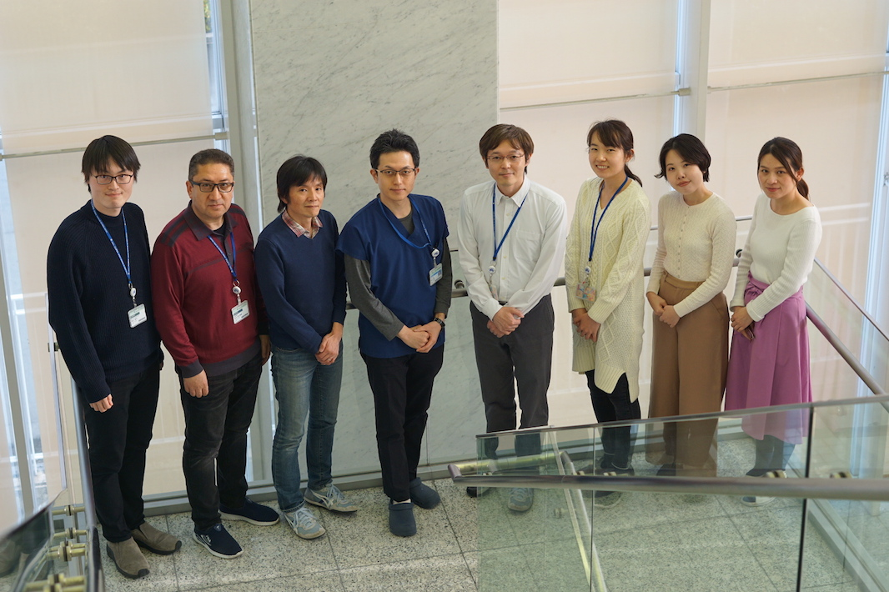
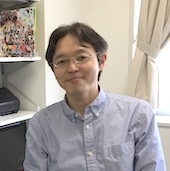

札幌医科大学医学部卒（2002年）、同大学院医学研究科修了（2007年）。米国 Dana-Farber Cancer Institute - Kornelia Polyak研究室にて乳がんのエピジェネティクス解析に従事。2011年より札幌医科大学医学部・分子生物学講座・助教。2012年からJSTさきがけ研究者兼任。2014年より同准教授。2016年より1年間総合病院で血液内科・総合診療科医師として勤務後、2017年4月がん研究所がんエピゲノムプロジェクトのプロジェクトリーダーに着任。 (詳細)
千葉大学大学院博士課程卒（2003年）。埼玉医科大学生化学教室助手（2003年-2008年）。米国ロックフェラー大学Robert G Roeder研究室ポストドクター及びリサーチアソシエイト（2008年-2018年）。継続して転写制御の分子メカニズムを生化学的及び分子生物学的手法を用いて研究。2018年2月より、がん研究所がんエピゲノムプロジェクトの研究員に赴任。転写制御の側面からがん化の分子機構を明らかにしたいと日々奮闘中。

復旦大学看護学部卒。2006年来日、2014年京都大学大学院医学研究科修了。2017年8月より現職。新しい知識を勉強しながら、今まで身につけた技術、知識、経験を生かして研究をサポートし、努力していきたいと思っております。

がん研有明病院・乳腺外科、連携大学院大学院生。

ガンの研究が初心者ですが、一生懸命頑張ります。

札幌医科大学医学部卒（2016年）。在学中、医学部分子生物学講座にて大腸癌におけるlong noncoding RNA研究に従事。分子生物学的・細胞生物学的実験とバイオインフォマティクス解析を統合して、トリプルネガティブ乳がんのエピゲノム変化に迫ります。
がん研有明病院・乳腺外科・副医長
がんのバイオロジーの本質を理解することにより、がん診療に貢献しうる知見を見出すことを目標としています。